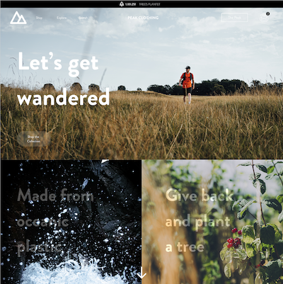
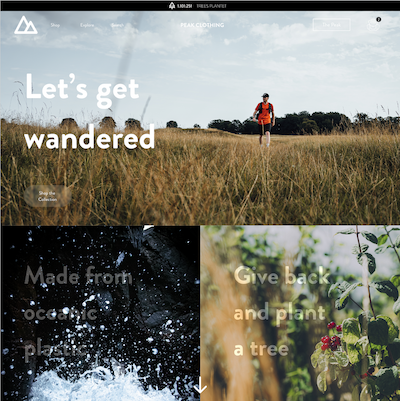

03 - UX
På dette tema var vores mål at designe en hifi prototype i Adobe XD. Udgangspunktet var et site der solgte t-shirts. Min rolle var at udvikle konceptet og designe prototypen. Jeg brugte desk research og surveys til at udvikle og teste mit koncept. Dette gav anledning til en ændring i konceptet og gav bedre forståelse for brugerens adfærd.
 



Det lærte mig
Vigtigheden i samspillet mellem brugere og brugergrænseflader. At lave desk research, surveys og interviews. At bygge en prototype i Adobe XD til at teste på inden udviklingen af et fuldt website.